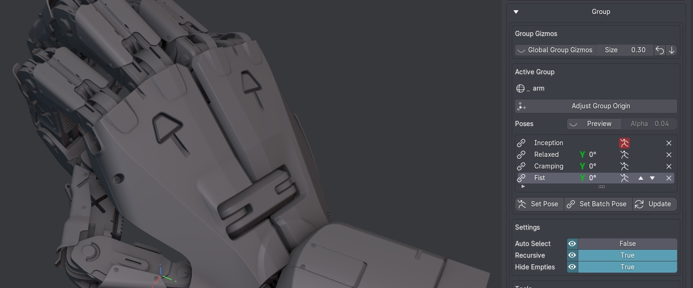

Group Tools
shortcut CTRL + G in Object Mode to run the Group tool
shortcut SHIFT + dbl LMB in Object Mode to run the Select Group tool
shortcut 1 in the Outliner to toggle into or out of Group Mode
shortcut 2 in the Outliner to expand it
shortcut 3 in the Outliner to collapse it
shortcut 4 in the Outliner to toggle display of parenting
The Group tool-set allows for scene organization using empties as parents.
Note
Group Gizmos and Group Poses are only available in the Deus Ex variant of MACHIN3tools.
Menu
3D View Sidebar > MACHIN3 Tab > MACHIN3tools Panel > Group Tools
Object Context Menu
Modes Pie
Preferences
{kind=link}
Group Introduction
Select Group
Selecting Groups behaves slightly differently in Local View, and automatically brings Group objects into Local View, while avoiding Recursive Group Selection, unless forced via the CTRL mod key.
Group Relationships and Group Origin Adjustment
Group Relationships can be visualized, by drawing group hierarchies in the 3D View.
This done automatically when entering Group Origin Adjustment Mode or Outliner Group Mode.
Group Mode
Toggling into Group Mode - by default via the 1 key will now automatically toggle group selection behavior such as Group Auto Select and Group Recursive Select, as well as ensure Group Empty Visibility. This is fully adjustable in the addon preferences.
{kind=link}
Group Poses and Gizmos
DeusEx only
In DeusEx, group empties can activate Group Gizmos - one per axis.
This allows for easy rotation of group empties, without having to select them first.
The intent here is to create a kind of very simple pseudo-rig.
 Group Transform tool rotating the ears while pre-viewing a pose
Group Transform tool rotating the ears while pre-viewing a pose
What this also allows for is storing specific rotations as Group Poses, which can then easily be retrieved again later.
Setup Group Gizmos
The Setup Group Gizmos tools allow for easy setup of the group gizmos. With the tool running axes that should get a gizmo can be picked via the X Y or Z keys, or toggled based on the view's direction via the TAB key.
See the statusbar for details.
Batch Poses
Batch Poses are poses shared and linked across multiple Group Empties or a single Group Hierarchy.
Using Batch Poses the entire Group can be posed with a single button press.
The Sidebar Panel is where you can name, create (set), retrieve, update or remove poses.
 Group (Batch) Poses of the active Group Empty exposed in the 3D view's sidebar
{kind=link}
As of MACHIN3tools 1.12, Group tools and various options are exposed in the Modes Pie tool.
That includes pose access in the DeusEx, which is super convenient.
Group (Batch) Poses exposed in the Modes Pie
{kind=link}